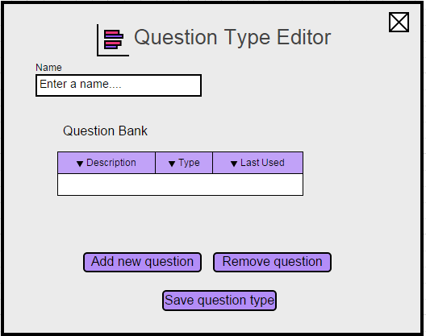
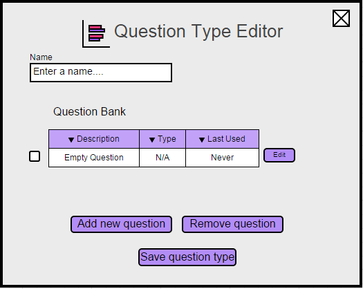

In this scenario, we assume an instructor is editing a question type for a section they have already created. The system displays the initial view of a question type shown in Figure X.

Figure 5: Question Type Editor Initial View
The instructor can fill in the name of the question type in the textbox labeled Name.
The Question Bank shows the questions that are a part of this question type, with a checkbox on the left for the instructor to choose if they want that question included in the question type.
The Type field shows the type of question, and the Last Used is a date representing when that question was last used in a test.
When the instructor presses the Add new question button, the system responds by adding a question to the Question Bank. The system updates the window as shown in Figure X.

Figure 5: Question Type Editor Filled
When the instructor presses the Remove question button, the system responds by removing that question from the bank.
The checkbox to the left of a question indicates whether the instructor wants that question to be a part of a test generated using this question type. Checked off means the question will be ignored when generating tests.
When the edit button to the right of a question is pressed, the system responds by taking you to the question creation window, which is detailed in Section 2.4.
We assume the instructor has created questions for this question type, following the section mentioned above. Figure X shows a filled out Question Type.
Figure 5: Question Type Editor Filled
When the instructor has added all their desired questions to this question type, they can press the Save question type button to save their changes and bring them back to the Section Editor screen.